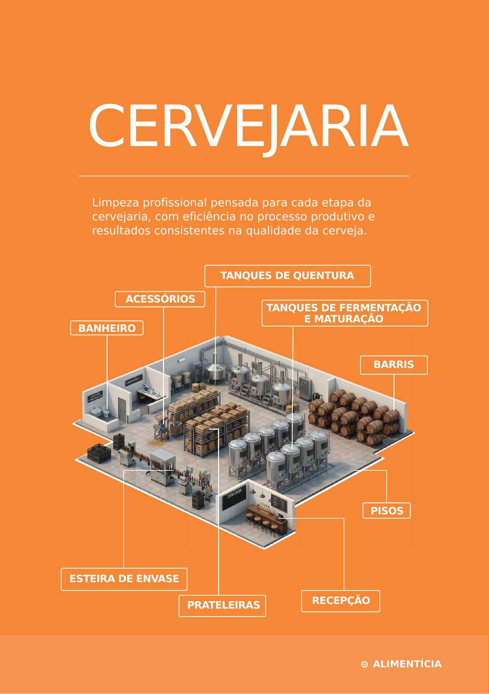
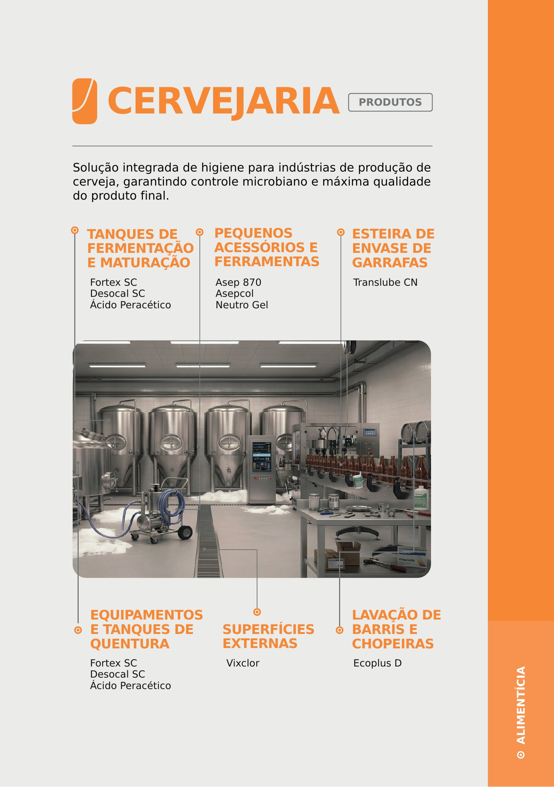
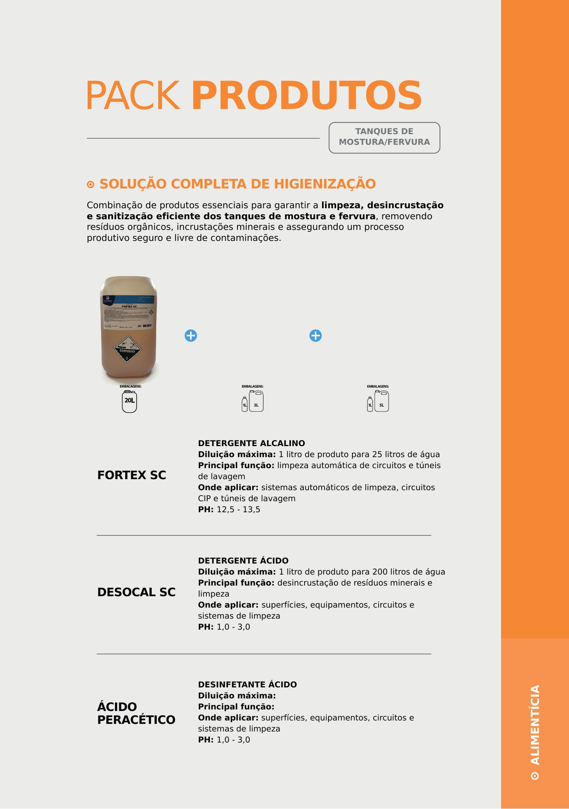
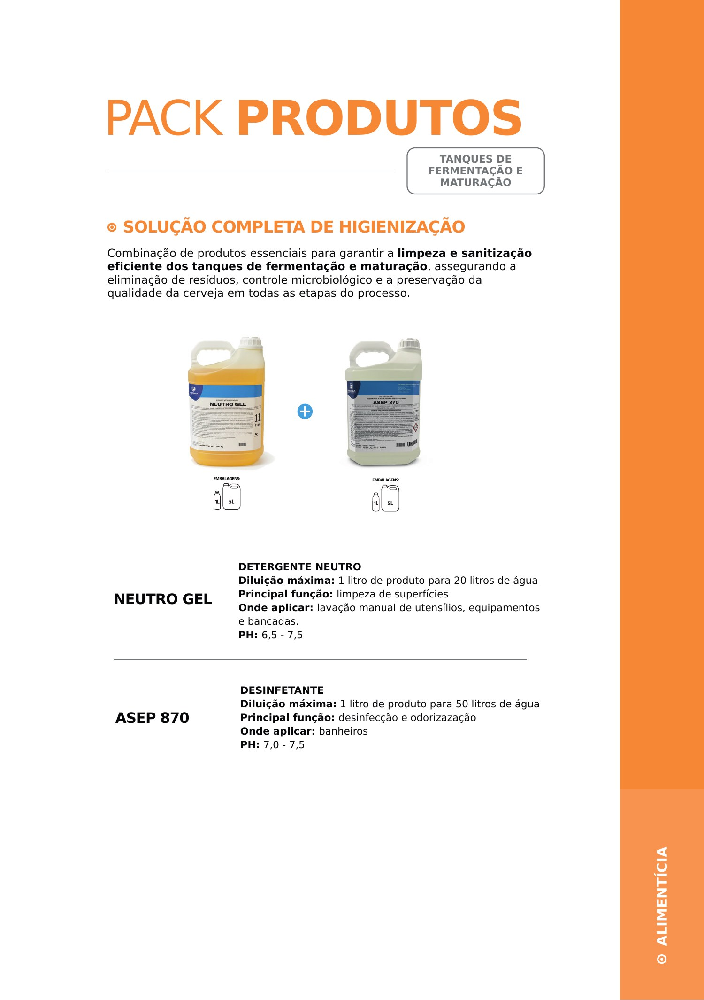
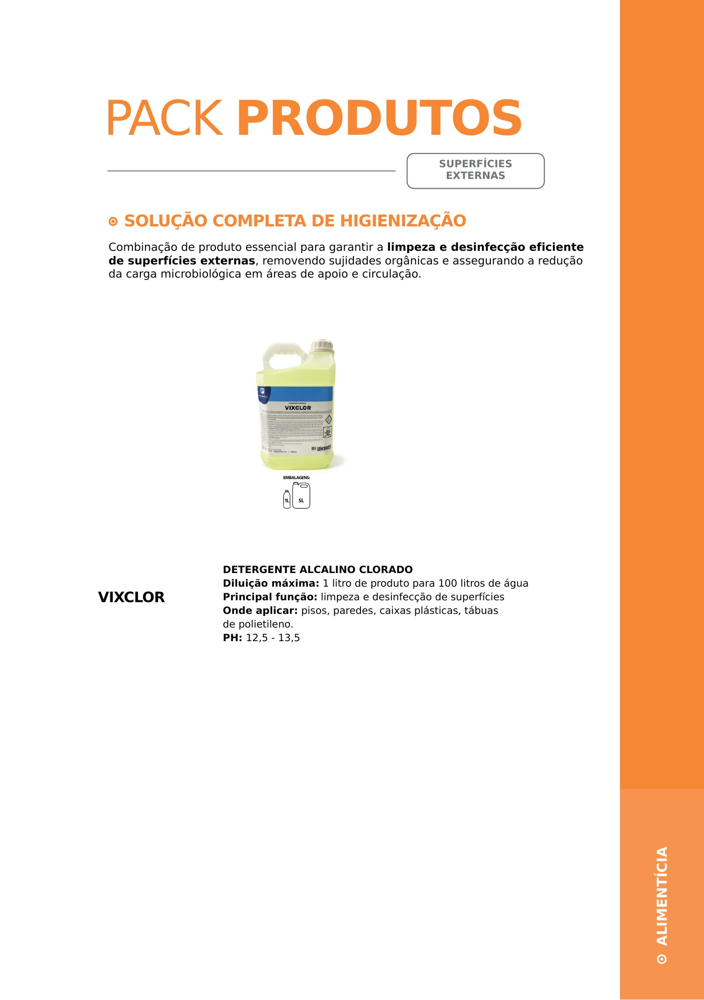
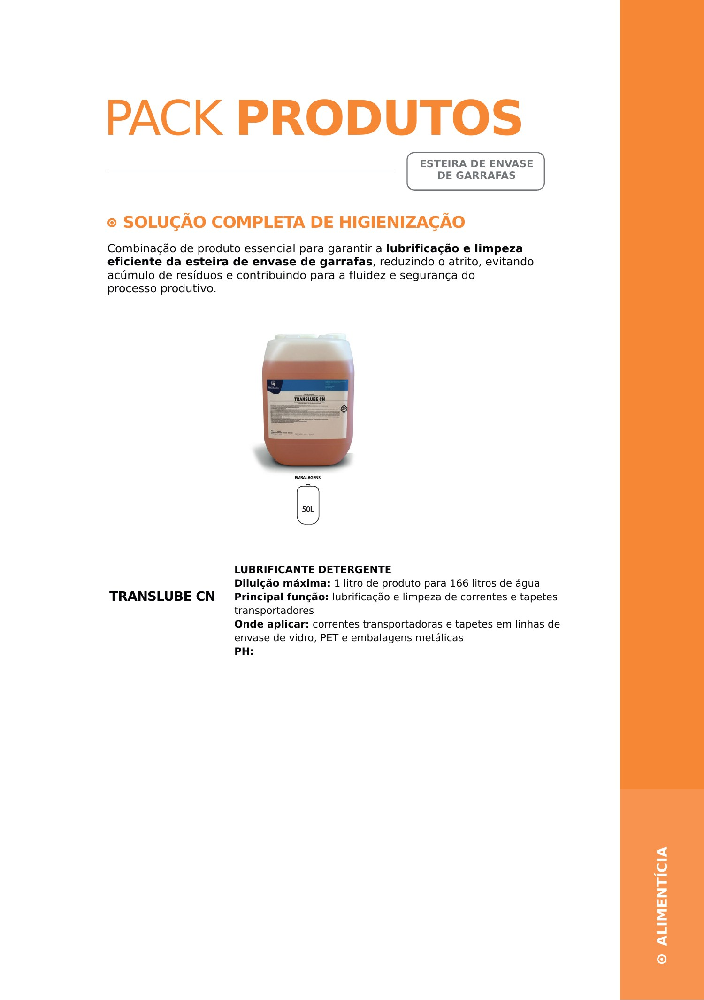
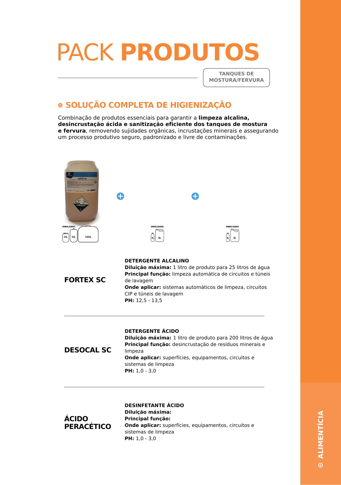
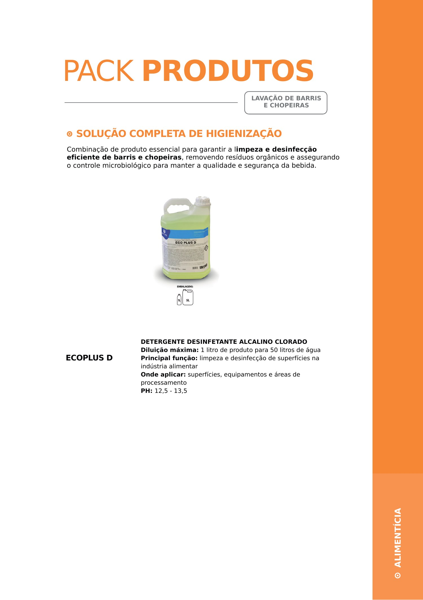

Cervejarias
Higiene profissional aplicada às etapas produtivas da cervejaria, com foco em processo, controle microbiológico e qualidade final.
Informação organizada para facilitar a escolha.
O material separa tanques, fermentação, maturação, superfícies externas, esteira de envase, barris, chopeiras, acessórios, pisos e áreas de apoio.
Mapa geral da cervejaria
A visão geral identifica tanques de quentura, fermentação e maturação, barris, acessórios, esteira de envase, pisos, prateleiras, recepção e banheiros.
Baseado no PDF técnico fornecido
Pontos de aplicação
Fortex SC, Desocal SC e Ácido Peracético aparecem para tanques; Ecoplus D para barris e chopeiras; Translube CN para envase; Vixclor para superfícies externas.
Baseado no PDF técnico fornecido
Tanques de mostura e fervura
A combinação técnica reúne limpeza alcalina com Fortex SC, desincrustação ácida com Desocal SC e sanitização com Ácido Peracético.
Baseado no PDF técnico fornecido
Fermentação e maturação
O objetivo é remover resíduos, controlar a carga microbiológica e preservar a qualidade da bebida ao longo das etapas do processo.
Baseado no PDF técnico fornecido
Superfícies externas
Vixclor é apresentado como detergente alcalino clorado para limpeza e desinfecção de superfícies externas e áreas de apoio.
Baseado no PDF técnico fornecido
Esteira de envase
Translube CN atua como lubrificante detergente para correntes e tapetes transportadores, auxiliando na fluidez do processo e na redução de resíduos.
Baseado no PDF técnico fornecido
Tanques — configuração ampliada
O material reforça o sistema combinado de detergente alcalino, detergente ácido e sanitização para processos de mostura e fervura.
Baseado no PDF técnico fornecido
Barris e chopeiras
Ecoplus D é apresentado como detergente desinfetante alcalino clorado para limpeza e desinfecção de superfícies, equipamentos e áreas de processamento.
Baseado no PDF técnico fornecidoPrecisa definir produtos e equipamentos para sua operação?
Fale com o comercial e informe o tipo de ambiente, processo e necessidade principal.